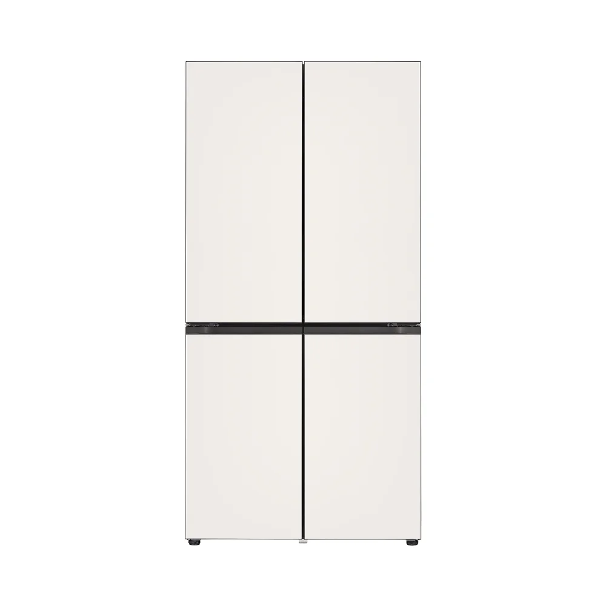
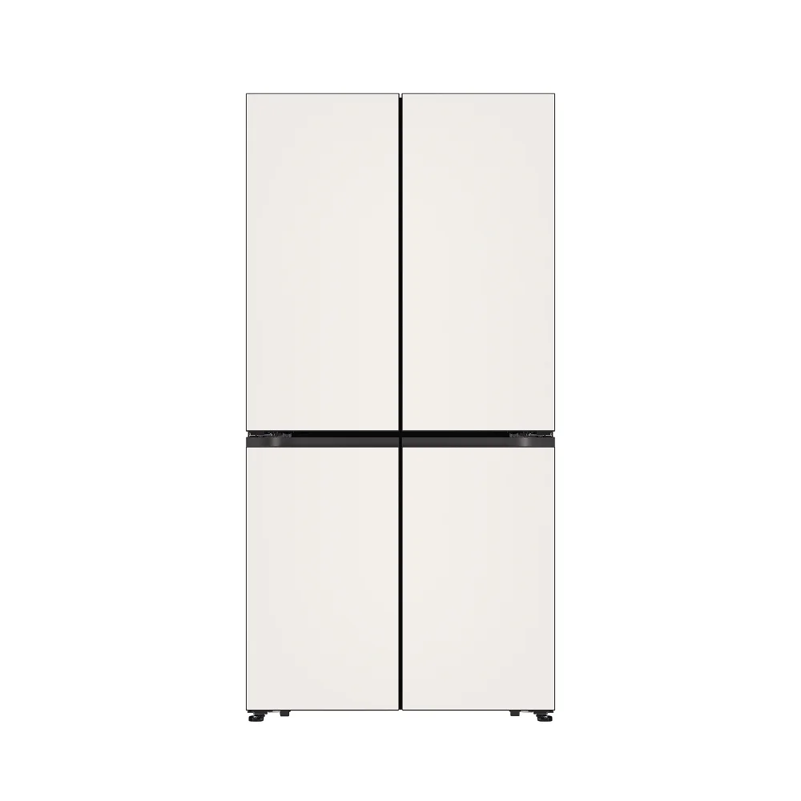
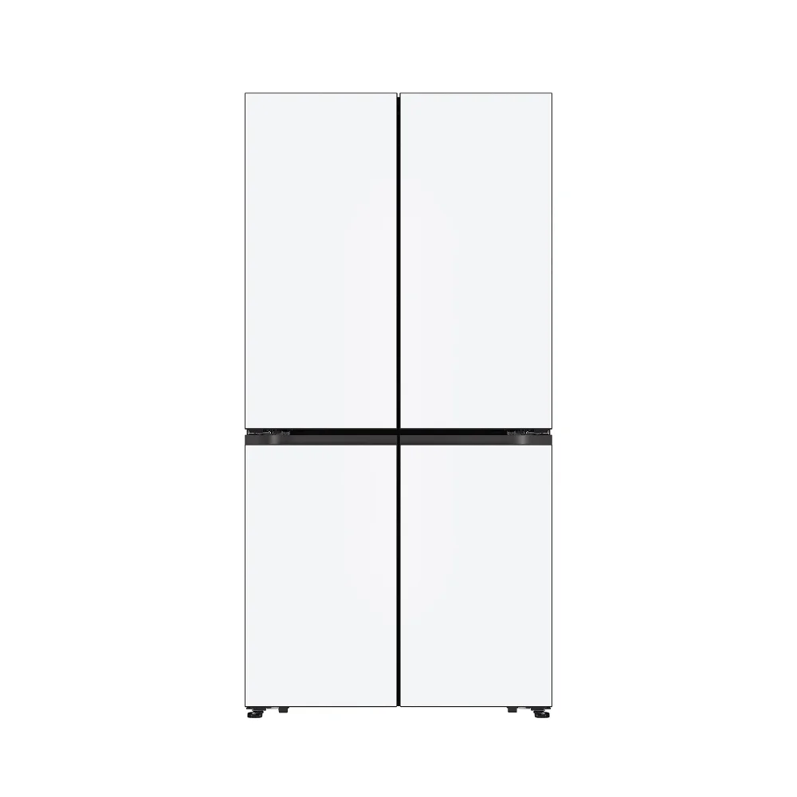

냉장고 칸 · 안쪽 실측
100 × 189cm폭 × 높이 · 깊이는 미측정SKYTOWER 36B · MEASURED FIT · 2026.10.29
실측으로 다시 보는
주방 가전 자리.
A·B·C·D·E 모든 안에 같은 실측 구조와 가전 칸을 적용했습니다.
전자레인지 칸은 안쪽 폭53×높이33cm. 삼성 큐커22L·32L 모두 이 칸에는 설치할 수 없어요. 냉장고는 새로 확인한 폭100×높이189cm를 기준으로 후보를 비교하되, 깊이와 방열·문 열림 공간까지 확인해야 합니다.
전자레인지 칸 · 안쪽 실측
53 × 33cm큐커 두 모델 모두 별도 자리 필요기존 E안 구매 계획
4,963,700원유지 · 새 냉장고와 큐커 받침 가구 별도확인된 실측과 아직 남은 치수
단위는cm입니다. 가전 칸은 제품 크기가 아닌 비어 있는 칸의 안쪽 폭·높이로 확인했어요. 손으로 작성한 원본 도면 대신 숫자만 정리했습니다.
| 위치 | 확인한 값 | 확인 범위 |
|---|---|---|
| 냉장고 칸 | 폭100 × 높이189 | 사용자 확인 안쪽 빈 공간. 깊이·콘센트 돌출·문 열림 공간 미측정. |
| 전자레인지 칸 | 폭53 × 높이33 | 사용자 확인 안쪽 빈 공간. 깊이는 미측정이며, 큐커 설치 판단은 이미 폭·높이에서 불가. |
| 세탁기 칸 | 폭60 × 높이83 | 사용자 확인 안쪽 빈 공간. 제품·호스·배수·문 열림까지 들어갈 수 있는지는 별도 검토. |
| 침실 · 위쪽 그림 | 상변250 · 왼쪽338 문이 있는 하변282 | 사용자 확인 282cm는 붙박이장 앞면부터 창 쪽 모서리까지입니다. 붙박이장 뒤벽부터 잰 전체 길이가 아니며, 단차·사선 각도까지 확정된 것은 아닙니다. |
| 거실 · 아래쪽 그림 | 상변370 · 하변384 | 사용자 확인 가운데 적힌340은 현재 판독 추정값으로 별도 취급. |
| 천장·요리 구간 | 천장228 · 요리 구간200 | 도면 판독 숫자는 읽히지만 치수의 기준점·방향을 사용자에게 별도로 확정받지 않은 값. |
보일러실 쪽은250cm 벽 끝에서114cm로 표시된 벽까지의 가로 길이가 미측정입니다. 거실340cm의 의미와 창 개구부의 실제 폭·위치도 추가 확인 대상입니다.
실측 길이를 반영해도, 방 모양 전체가 실측으로 확정된 것은 아니에요.
보일러실 쪽 미측정 가로 단차는 약122.7cm로 계산한 임시값입니다. 기존 모델의 보일러실 뒤벽 기울기를 유지한다는 가정이 포함되어 있어요. 사선 창벽은 평면 수평축 기준 거실 약38.6도·침실 약35.3도로 계산되지만, 현장에서 잰 각도가 아니며 두 창벽의 평행 여부도 아직 미확정입니다.
외벽 두께18cm, 공유벽·보일러실 벽 두께12cm, 붙박이장 깊이44cm는 기존 모델 값을 유지한 부분입니다. 전체 위치를 맞추는 복도206.5cm 기준도 도면 판독에 따른 임시 기준이므로, 이번에 직접 확인한 실측값과 구분해서 봐 주세요.
큐커는 기존 칸에 넣지 않는 구성
22L는 높이가5.53cm 초과하고, 32L는 높이 여유가0cm예요.
32L 본체의 숫자가 칸 높이와 같아도 설치 가능한 것은 아닙니다. 두 모델 모두 위20cm, 양옆 각각10cm의 방열 공간을 확보해야 해요.
 본체 높이부터 초과
본체 높이부터 초과큐커 멀티22L
MO22A7797CW2 · 글램 화이트 · 프리스탠딩
닫힌 본체 · 폭×높이×깊이50 × 38.53 × 41.58cm
실측 칸 높이33cm와 비교5.53cm 초과
폭은 합계3cm 남지만 높이가 맞지 않아요. 깊이를 추가로 재더라도 이 칸에 설치할 수 없다는 결론은 같습니다.
본체 무게23.3kg · 최대 복합 소비전력2,550W. 이 모델의 현재 판매가·재고는 이번 실측 검토에서 확인하지 않았어요.
 방열 공간 부족
방열 공간 부족큐커 오븐32L
MC32B7388CE · 글램 화이트 · 프리스탠딩
닫힌 본체 · 폭×높이×깊이52.3 × 33 × 51.5cm
실측 칸 높이33cm와 비교위쪽 여유0cm
정중앙에 놓아도 양옆은 각각0.35cm뿐이에요. 깊이와 삽입 오차도 미확인이라 본체가 실제로 들어간다고 확정할 수 없고, 방열 조건은 충족하지 못합니다.
본체 무게19kg · 최대 복합 소비전력2,500W. 기존 견적의399,000원은 이 모델의 계획비로, 현재 구매 가능 가격을 뜻하지 않습니다.
별도 받침 가구를 놓는다면
통풍이 열린 내열 상판을 검토해요. 아래 가구 크기는 본체와 설명서의 간격을 더해 잡은 배치 검토용 제안이며, 아직 제품·위치·가격을 정하지 않았습니다.
| 모델 | 상판 제안 · 폭×깊이 | 상판 높이 | 본체 위 여유 |
|---|---|---|---|
| 22L | 80 × 60cm | 바닥에서85cm 이상 | 20cm 이상 |
| 32L | 80 × 70cm | 바닥에서85cm 이상 | 20cm 이상 |
뒤에 콘센트가 있으면15cm를 띄워야 하므로 본체를 포함한 깊이는22L 약56.58cm,32L 약66.5cm가 됩니다. 뒤 콘센트가 없는 경우도10cm 여유가 필요해요. 이 치수는 밀폐장을 제작해도 된다는 뜻이 아니며, 문을 연 상태와 앞쪽 작업 공간은 별도로 남겨야 합니다.
가구 크기 외에 전원과 상판도 맞아야 해요.
AC220V·60Hz, 정격15A 이상 접지 콘센트를 큐커 단독으로 사용합니다. 멀티탭·임의 연장선은 사용하지 않고, 무게와 음식·용기를 안정적으로 지지하는 내열 받침이 필요해요. 기존 높이74cm 식탁은 설명서의85cm 이상 조건에 맞지 않습니다.
기존 조리대는 실제 남는 폭·깊이·상부장 간격과 콘센트를 재기 전까지 대체 자리로 확정하지 않았습니다. 삼성전자서비스 설치 안내 ↗
냉장고는100×189cm 안쪽 공간부터
새 냉장고는 기존 E안 총액과 별도로 비교합니다. 본체 크기가 맞는 후보도 칸 깊이·방열 공간·문 열림과 기존 냉장고 처리 조건을 확인한 뒤 선택해야 해요.
LG 4도어를 원하면, 우선 후보는 Fit & Max M616GBB0M1 베이지609L.
A~E 3D에 같은 크기와 색상으로 반영했어요. 실측100×189cm에는 본체 기준 좌우 약4.3cm씩·위3cm가 남고, 이 모델의 공식 설치 폭·높이 조건에도 들어갑니다. 다만 깊이와 문 열림 동선은 미확인이라 설치 확정은 아니에요.

A~E 3D 반영 · 우선 후보M616GBB0M1 · 베이지609L
2025년형 Fit & Max · 미스트 글라스
냉장380L / 냉동229L · 1등급
2,690,000원
LG 공식 회원가 · 기본 배송·설치 무료, 현장 조건별 추가비 별도
공개 앱 쿠폰 적용 표시는2,460,000원. 23만원 앱 전용 쿠폰이 표시되지만, 개인별 발급·적용과 최종 주문가는 확인하지 않았어요. 카드 결제일 할인까지 합친 최대혜택가는 비교가격에서 제외했습니다.
본체 · 폭×높이×깊이91.4 × 186 × 69.8cm
3D의 뒷벽 → 문 앞면74.8cm · 임시 계획
비교한 세 모델 중 가격이 가장 낮고, 밝은 베이지가 우드와 자연스럽게 이어져요. 2인이 쓰기에 용량도 넉넉한 편입니다. 신형의 오토클로징·접이선반은 없어요.
 설치 예상 · 실제 촬영 사진 아님
설치 예상 · 실제 촬영 사진 아님100×189cm 칸에 놓은 모습
위 사진은 이번 실측을 반영한 E안3D예요. A·B·C·D에도 같은 냉장고 규격을 적용했습니다. 색상·손잡이 등 세부 형상은 간략화한 모델입니다.
본체를 가운데 놓을 때좌우 각각4.3cm
칸 높이189−본체186위쪽3cm
3D는 본체 뒤5cm를 띄웠어요. 69.8+5=74.8cm는 보수적인 배치 가정이며 LG의 최소 설치 깊이가 아닙니다. 모델 속 장 깊이71cm도 미측정 임시값이므로, 장 앞으로 약3.8cm 나오는 모습은 현장 결과와 달라질 수 있어요.

신형 베이지 대안G646GBB032 · 베이지650L
2026년형 · 미스트 글라스 · 2등급
냉장391L / 냉동259L · 오토클로징·접이선반
3,900,000원
LG 공식 회원가 · 기본 배송·설치 무료, 현장 조건별 추가비 별도
본체 · 폭×높이×깊이91.4 × 186 × 70.9cm
우선 후보와 비교41L 증가 ·121만원 추가
신형의 수납 기능을 원할 때 볼 대안이에요. 용량 차이와 가격을 함께 보면 이번 집에는 M616 쪽이 더 실속 있어 보여요. 본체 깊이70.9cm와 후면 핸들을 뺀69.8cm를 구분해야 합니다.

화이트·1등급 대안G646GQQ031 · 화이트650L
2026년형 · 미스트 글라스 · 1등급
냉장391L / 냉동259L · 오토클로징·접이선반
4,150,000원
LG 공식 회원가 · 기본 배송·설치 무료, 현장 조건별 추가비 별도
본체 · 폭×높이×깊이91.4 × 186 × 70.9cm
우선 후보와 비교146만원 추가
화이트와 신형·1등급을 함께 원할 때의 선택지예요. 현재 집의 흰 벽·주방장과 이어지지만, 따뜻한 우드 분위기와 비용을 고려해 베이지 M616을 우선으로 골랐어요.
가격·판매 표시 확인일2026.10.29. LG 공식 공개 페이지에 구매가·판매 가능 표시가 있는 후보이며, 주소별 재고 배정·설치 일정은 미확인입니다. 시장 전체 최저가를 뜻하지 않으며, 오늘의집·무빙패스 혜택을 공식몰 가격에서 차감하지 않았어요. 앞서 본 M626MQQ022S는 공식 단종 표시이고 확인한 오늘의집 가격도500만원이라 이번 후보에서 제외했습니다.
“본체가 들어간다”와 “설치할 수 있다”를 나눠서 확인
| 항목 | M616 · 2025년형 | G646 · 2026년형 |
|---|---|---|
| 공식 가구장 내부 폭×높이 | 91.9 × 187.5cm | 91.9 × 186.9cm |
| 공식 가구장 깊이 | 70cm 이상 ·72cm 권장 | 70cm 이상 ·72cm 권장 깊이70cm 설치 시 후면 핸들 제거 조건 |
| 우리 집과 비교 | 실측100×189cm는 폭·높이 조건에 들어갑니다. 칸 깊이·콘센트 돌출과 도어 동선은 미측정입니다. | |
출처: LG 공식 설치가이드. M626(25년형) 도면에는 M616 동일 적용이 명시돼 있어요. 도면의 도어 폭91.1cm는 일부 돌출물을 제외한 값이며 상품 사양의 최외곽91.4cm와 구별합니다.
문이 열리는 공간은 장 앞쪽에서 확인해야 해요.
공식 도면은 냉장실 문110도 개방 시 앞쪽44.2cm·옆쪽13.5cm의 문 궤적을 표시합니다. 장 안 양옆에13.5cm씩 띄우라는 뜻이 아니라, 문이 나오는 장 앞에서 벽·식탁과 부딪히지 않는지 볼 치수예요. 3D는 닫힌 문 기준이며 실제 개방 시험 결과가 아닙니다.
밀착 설치 키트가 항상 필요한 것은 아니에요. 공식 안내는4mm 밀착 설치 시 키트를 요구하지만, 도어와 가구장 사이15mm 이상이면 단독 설치 키트 없이 설치할 수 있는 예외를 둡니다. 이 칸은 중앙 배치 계산상 여유가 있지만 실제 설치 위치는 기사 확인이 필요해요. 키트 비용은 별도 미확정입니다.
추가로 재면 판단이 끝나는 부분
- 뒷벽부터 장 앞면까지의 깊이와 콘센트·플러그·걸레받이 돌출.
- 장 앞에서 맞은편 식탁·벽까지의 통로, 장 측판 끝과 열린 문 사이 간격.
- 반입 경로와 임대 제공 냉장고의 교체·보관 처리 조건.
기존 E안 구매 계획 · 이번 검토로 총액 변경 없음
4,963,700원큐커 계획비399,000원과 예비비300,000원이 이미 포함되어 있어요. 큐커를 위한 새 받침 가구는 제품·가격이 미정이므로 추가하지 않았습니다. 새 냉장고·매트리스·무선청소기 본체는 별도 예산입니다.
무인양품 서랍이 품절이라 합배송은 미확정이며, 기존 견적의 분리배송 추가50,000원 가능 조건도 유지됩니다. 품목별 견적 보기 ↗